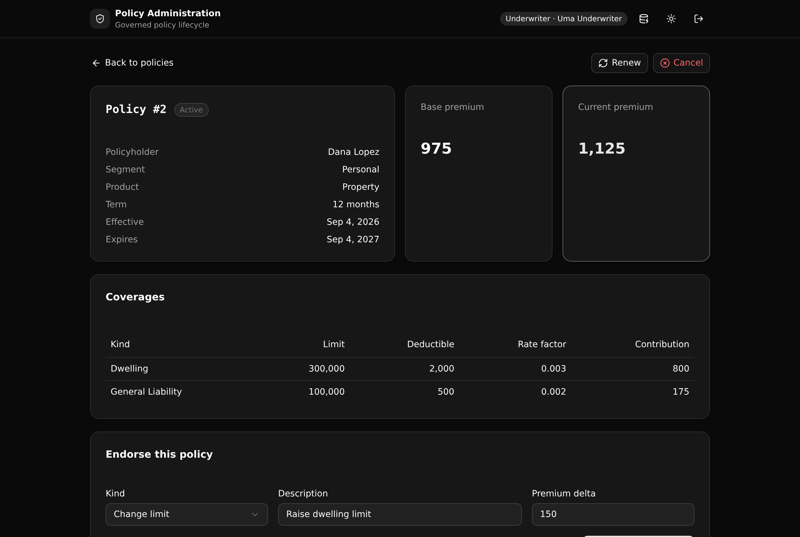

A governed insurance policy lifecycle in one Xano API layer. Quote, bind, endorse, renew, and cancel are an enforced state machine. The premium is recomputed on every change, and every change is written to a readable history.

The kind of service a legacy admin monolith holds today, rebuilt as one Xano backend a team can read and trust.
Status moves quoted, bound, active, renewed, cancelled. Illegal moves are refused at the API layer, not applied.
The base premium is computed from the coverages. An endorsement recomputes it and records the value before and after.
Agents quote, underwriters bind and endorse, viewers read. Each endpoint re-reads the caller's live role. Never row-level security.
Every transition and every premium change writes an event, so the full story of a policy reads in order.
Nine endpoints across three groups. Each one enforces a rule a human would want to audit.
| Verb | Path | What it enforces |
|---|---|---|
| POST | /api:auth/login | Checks the password, mints a role-carrying token |
| POST | /api:policy/quote | Agent or underwriter, needs a coverage, computes the base premium |
| POST | /api:policy/bind | Underwriter, only a quoted policy, stamps the term dates |
| POST | /api:policy/endorse | Underwriter, only an active policy, recomputes the premium |
| POST | /api:policy/renew | Underwriter, active and in its renewal window, rolls the term forward |
| POST | /api:policy/cancel | Underwriter, not already cancelled, records the reason |
| GET | /api:policy/get/{policy_id} | Any role, the policy with coverages, endorsements, and history |
| GET | /api:policy/list | Any role, policies with status and premium, filterable |
| POST | /api:seed/run | Loads the demo book, ephemeral only |
A React and Vite frontend that derives its paths and types from the backend defs.
Clone it, sign in to Xano once, and deploy to a live ephemeral. Or hand this prompt to your coding agent.
Set up the Policy Administration Service Xano template from https://github.com/xano-scratch/policy-administration-service Clone the repo, run `npm install`, then `npx xanots login` and `npm run xano:deploy` to get a live URL. Open it, sign in as the underwriter, and walk me through the quote, bind, endorse, renew, and cancel flow. Then show me where each rule is enforced in xano/.
npm run xano:deploy for a fresh live URL of your own. Demo accounts share the password
demo1234, and the book loads on first sign-in.